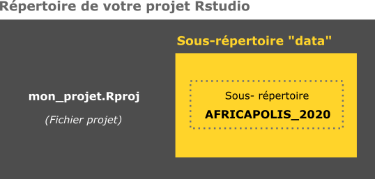

Géomatique avec R - vecteur
Le package sf pour manipuler les données géographiques vectorielles
Introduction
Cette leçon vise à initier à la gestion, l’analyse et la représentation de données géographiques vectorielles avec le package sf. Les différentes manipulations de données vectorielles abordées sont :
- Import et export de données
- Gestion de la projection cartographique
- Affichage graphique des données
- Sélection par attribut
- Sélection spatiale
- Opération sur les géométries
Manuel
Note
Ce support de ce cours est très largement inspiré du manuel “Géomatique avec R”, plus complet et initialement conçu pour accompagner le cours ‘Cartographie avec R’ du Master 2 Géomatique, géodécisionnel, géomarketing et multimédia (G2M) de l’Université Paris 8 Vincennes - Saint-Denis (France). Vous pouvez envoyer vos remarques et suggestions aux auteurs en postant une issue sur le dépôt GitHub de ce document.
Exercice
1. Créez un projet Rstudio
File/New Project/New Directory…
2. Téléchargez les données suivantes :
| Intitulé | Téléchargement |
|---|---|
| Emprise des agglomérations urbaines (AFRICAPOLIS 2020) | Download |
3. Placez les données (décompressées) dans le répertoire de votre projet, de la façon suivante :
4. Importez le fichier africapolis_extract.shp
Un peu d’aide ?
# Pour importer des données géographiques
library(sf)
... <- st_read()5. Vérifiez quelle est la projection cartographique utilisée. Re-projetez la couche dans la projection UTM zone 31N (EPSG : 32631 ).
Un peu d’aide ?
# Pour connaitre le système de référence et de projection d'une couche
st_crs(...)
# Transformer le crs d'un objet sf
... <- st_transform(...)5. Affichez les géométries des agglomérations urbaines.
Astuce : Vous pouvez utiliser la package mapview qui permet d’afficher la couche sur différents fonds de carte dynamiques. Cela permet de contrôler le niveau de précision de vos données.
Un peu d’aide ?
# Affichez les géométries d'un objet sf
plot(st_geometry(...))
# Afficher sur un fond de carte dynamique
library(mapview)
mapview(...)6. Calculez les surfaces de chaque agglomération urbaine. Enregistrez ces valeurs dans une nouvelle colonne.
Un peu d’aide ?
# st_area() permet de calculer la surface des polygones d'un objet sf
...$... <- st_area(...)7. Calculez le nombre et la superficie totale des agglomérations urbaines, par pays.
Un peu d’aide ?
library(dplyr)
... <- ... %>%
group_by(...) %>%
summarise(... = sum(...),
... = n())8. Créez une quatrième couche géographique (point) à partir des coordonnées de l’Institut Régional de Santé Publique, à Ouidah (Bénin) :
- Latitude = 6.349223507626634
- Longitude = 2.0879482065861783
- CRS = WGS84 (4326)
Un peu d’aide ?
# Création d'un data.frame avec les colonnes "name", "lat" et "long"
IRSP <- data.frame(name = "...",
lat = ...,
long = ...)
# Création d'une couche géographique à partir de ces cordonnées
IRSP_geo <- st_as_sf(IRSP,
coords = c("...", "..."),
crs = ...)9. Créez une zone tampon de 50km autour de l’Institut Régional de Santé Publique
Un peu d’aide ?
# Créer un zone tampon
... <- st_buffer(..., dist = ...)10. Détectez les agglomérations urbaines situées à moins de 50 km de l’IRSP
Un peu d’aide ?
# Quelles agglomérations intersectent la zone tampon ?
...$... <- st_intersects(..., ..., sparse = ...)11. Affichez correctement les différentes couches. Utilisez la couleur pour indiquer les agglomérations urbaines qui intersectent la zone tampon. Exemple :

Code
# Utilisez l'argument "add" pour superposer les couches
plot(st_geometry(...))
plot(...["..."], add = TRUE)
plot(st_geometry(...), add = TRUE)
plot(st_geometry(...), add = TRUE)12. Combien d’habitants résident dans les agglomérations urbaines qui intersectent la zone tampon ?
Code
# Sélectionnez les agglomérations qui intersectent la zone tampon
... <- ...[...$... == TRUE, ]
# Calcul de la population totale de ces agglomérations
sum(...$...)